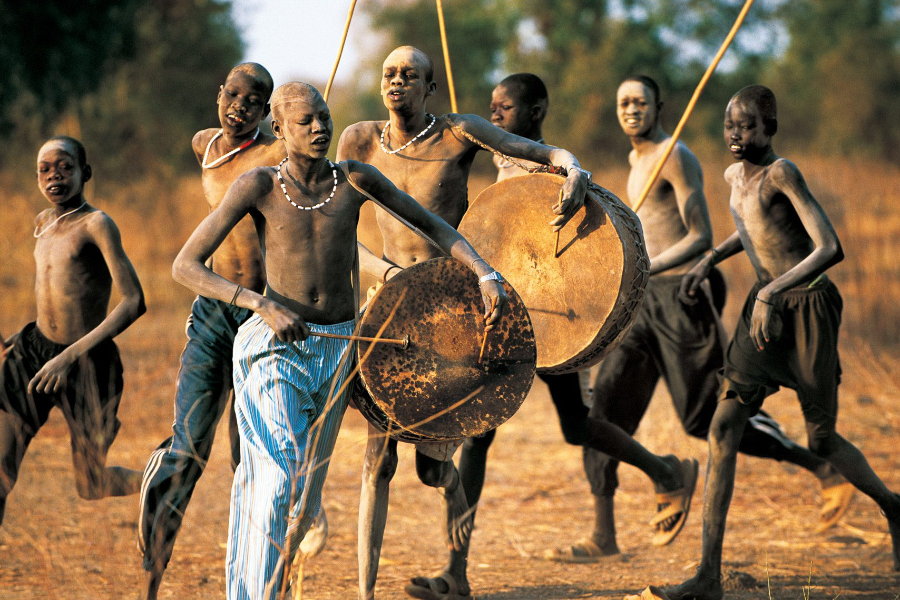
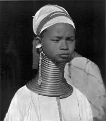
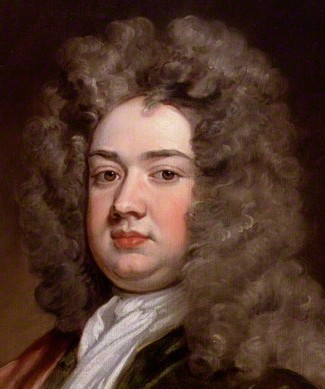

What is the beauty?
Beauty is not a fixed idea—it changes across cultures, time periods, and social values. What one society considers attractive, another may not notice at all.
In general, people often understand beauty as a combination of physical features (such as face, body, skin, and hair) and non-physical qualities like
confidence, health, and personal style. Today, global media influences beauty standards, but local traditions and cultural identity still play a strong role.
In the 19th century, beauty in Europe was often associated with pale skin, delicate features, and a refined appearance. Pale skin showed that a person
did not work outside, which was linked to higher social status. Both women and men tried to keep their skin light. In fact, some men used powders or light
makeup to appear paler and more “noble.” A slim but not too thin body and neat clothing were also important.
In the 20th century, ideas of beauty began to change more quickly. In the early 1900s, pale skin was still popular, but later—especially after the
1920s—tanned skin became fashionable in some Western countries. This was partly influenced by figures like Coco Chanel, who helped make tanning a symbol of
leisure and wealth. Over time, different body types, hairstyles, and fashion trends became popular in different decades, showing that beauty is always evolving.
In some cultures, beauty is connected to strength and health rather than delicacy. For example, among the Dinka people of South Sudan, tall height and strong
bodies are often admired. Both men and women may decorate their bodies with patterns, scars, or jewelry, which are seen as signs of identity, courage, and beauty.
Different cultures have also had very unique beauty traditions. In China, especially in the past, small feet were considered very beautiful. This idea led to
the practice of foot binding, where girls’ feet were tightly wrapped from a young age to keep them small. Although this tradition ended long ago, it shows
how strongly cultural ideas can shape beauty standards.
In Myanmar (and also in parts of Thailand), some women from groups like the Kayan wear neck rings. The more rings they wear, the longer their neck appears,
and this is traditionally seen as a sign of beauty and cultural identity.
Overall, beauty is not universal. It reflects history, environment, and values. By studying different cultures and time periods, we can see that beauty is
not just about appearance—it is also about meaning, identity, and tradition.